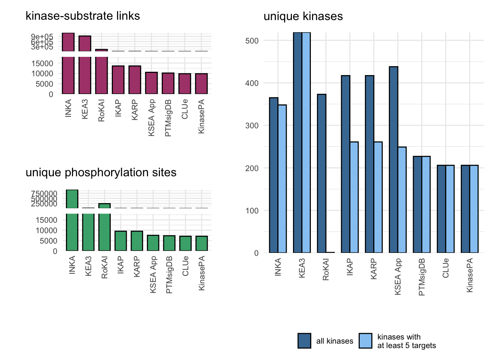

Last updated: 2022-09-12
Checks: 7 0
Knit directory: kinase_review/
This reproducible R Markdown analysis was created with workflowr (version 1.7.0). The Checks tab describes the reproducibility checks that were applied when the results were created. The Past versions tab lists the development history.
Great! Since the R Markdown file has been committed to the Git repository, you know the exact version of the code that produced these results.
Great job! The global environment was empty. Objects defined in the global environment can affect the analysis in your R Markdown file in unknown ways. For reproduciblity it’s best to always run the code in an empty environment.
The command set.seed(20220620) was run prior to running
the code in the R Markdown file. Setting a seed ensures that any results
that rely on randomness, e.g. subsampling or permutations, are
reproducible.
Great job! Recording the operating system, R version, and package versions is critical for reproducibility.
Nice! There were no cached chunks for this analysis, so you can be confident that you successfully produced the results during this run.
Great job! Using relative paths to the files within your workflowr project makes it easier to run your code on other machines.
Great! You are using Git for version control. Tracking code development and connecting the code version to the results is critical for reproducibility.
The results in this page were generated with repository version 752459d. See the Past versions tab to see a history of the changes made to the R Markdown and HTML files.
Note that you need to be careful to ensure that all relevant files for
the analysis have been committed to Git prior to generating the results
(you can use wflow_publish or
wflow_git_commit). workflowr only checks the R Markdown
file, but you know if there are other scripts or data files that it
depends on. Below is the status of the Git repository when the results
were generated:
Ignored files:
Ignored: .DS_Store
Ignored: .Rhistory
Ignored: .Rproj.user/
Ignored: INKA/
Ignored: code/.DS_Store
Ignored: code/IKAP/.DS_Store
Ignored: code/RoKAI-master/.DS_Store
Ignored: code/RoKAI-master/data/
Ignored: code/kinasePA/
Ignored: data/CPTAC_estefani_clean_zip/
Ignored: data/KEA3/
Ignored: output/CPTAC/
Ignored: output/IKAP/
Ignored: output/KEA3/
Ignored: output/KSEA/
Ignored: output/PTM-SEA/
Ignored: output/benchmark/
Ignored: output/figures/
Ignored: output/rokai/
Note that any generated files, e.g. HTML, png, CSS, etc., are not included in this status report because it is ok for generated content to have uncommitted changes.
These are the previous versions of the repository in which changes were
made to the R Markdown (analysis/prior_information.Rmd) and
HTML (docs/prior_information.html) files. If you’ve
configured a remote Git repository (see ?wflow_git_remote),
click on the hyperlinks in the table below to view the files as they
were in that past version.
| File | Version | Author | Date | Message |
|---|---|---|---|---|
| Rmd | 752459d | Sophia Müller-Dott | 2022-09-12 | changed absolute to relative paths |
| html | 752459d | Sophia Müller-Dott | 2022-09-12 | changed absolute to relative paths |
| Rmd | cb69eab | Sophia Müller-Dott | 2022-09-12 | added code for some methods and for comparison of prior knowledge |
| html | cb69eab | Sophia Müller-Dott | 2022-09-12 | added code for some methods and for comparison of prior knowledge |
Here we will compare the amount of information from the pior knowledge network of the tools. The goal is to see for how many kinases we can estimate activities for each tool and how many phosphorylation sites can be considered in an optimal case. We will look at these methods:
library(ClueR)
library(directPA)
library(KSEAapp)
library(qusage)
library(ggbreak)
library(patchwork)
library(tidyverse)For each tool we will extract the number of interactions, unique kinases, kinases with at least 5 targets and unique pps.
ClueR provides a package containing the data from PhosphoSitePlus which they use in their method. (This is not the most updated version see IKAP)
data(PhosphoSite)
CLUe.network.human <- PhosphoSite.human
CLUe.size.human <- c(tool = "CLUe",
kinases = unique(names(CLUe.network.human)) %>%
length(),
kinases_5 = names(CLUe.network.human)[map(CLUe.network.human, length) >= 5] %>%
unique() %>%
length(),
pps = unlist(CLUe.network.human) %>%
unique() %>%
length(),
edges = unlist(CLUe.network.human) %>%
length())
CLUe.network.mouse <- PhosphoSite.mouse
CLUe.size.mouse <- c(tool = "CLUe.mouse",
kinases = unique(names(CLUe.network.mouse)) %>%
length(),
kinases_5 = names(CLUe.network.mouse)[map(CLUe.network.mouse, length) >= 5] %>%
unique() %>%
length(),
pps = unlist(CLUe.network.mouse) %>%
unique() %>%
length(),
edges = unlist(CLUe.network.mouse) %>%
length())
knitr::kable(rbind(CLUe.size.human, CLUe.size.mouse))| tool | kinases | kinases_5 | pps | edges | |
|---|---|---|---|---|---|
| CLUe.size.human | CLUe | 206 | 206 | 7065 | 9830 |
| CLUe.size.mouse | CLUe.mouse | 235 | 235 | 12050 | 17532 |
IKAP also uses PPS+. Following the instructions on GitHub (https://github.com/marcel-mischnik/IKAP) this will be manually downloaded before running IKAP.
PPS.plus <- read_tsv(file = "data/PPSp_20220830", skip = 2)
PPS.plus.human <- PPS.plus %>%
dplyr::filter(KIN_ORGANISM == "human" & SUB_ORGANISM == "human") %>%
dplyr::select(KINASE, SUB_GENE, SUB_MOD_RSD)
PPS.plus.human <- PPS.plus.human %>% filter(!duplicated(PPS.plus.human))
IKAP.size <- c(tool = "IKAP",
kinases = unique(PPS.plus.human$KINASE) %>%
length(),
kinases_5 = names(table(PPS.plus.human$KINASE))[table(PPS.plus.human$KINASE) >= 5] %>%
unique() %>%
length(),
pps = paste(PPS.plus.human$SUB_GENE, PPS.plus.human$SUB_MOD_RSD, sep = "_") %>%
unique() %>%
length(),
edges = nrow(PPS.plus.human))
knitr::kable(rbind(CLUe.size.human, IKAP.size))| tool | kinases | kinases_5 | pps | edges | |
|---|---|---|---|---|---|
| CLUe.size.human | CLUe | 206 | 206 | 7065 | 9830 |
| IKAP.size | IKAP | 417 | 261 | 9511 | 13581 |
KinasePA also uses the annotations from PhosphoSite Plus
data(PhosphoSite)
KinasePA.network.human <- PhosphoSite.human
KinasePA.size <- c(tool = "KinasePA",
kinases = unique(names(KinasePA.network.human)) %>%
length(),
kinases_5 = names(KinasePA.network.human)[map(KinasePA.network.human, length) >= 5] %>%
unique() %>%
length(),
pps = unlist(KinasePA.network.human) %>%
unique() %>%
length(),
edges = unlist(KinasePA.network.human) %>%
length())
knitr::kable(rbind(CLUe.size.human, IKAP.size, KinasePA.size))| tool | kinases | kinases_5 | pps | edges | |
|---|---|---|---|---|---|
| CLUe.size.human | CLUe | 206 | 206 | 7065 | 9830 |
| IKAP.size | IKAP | 417 | 261 | 9511 | 13581 |
| KinasePA.size | KinasePA | 206 | 206 | 7065 | 9830 |
No source code available. In the publication they also use PhosphoSitePlus.
KARP.size <- IKAP.size #(PhosphoSitePlus from 2022-08-30)
KARP.size["tool"] <- "KARP"
knitr::kable(rbind(CLUe.size.human, IKAP.size, KinasePA.size, KARP.size))| tool | kinases | kinases_5 | pps | edges | |
|---|---|---|---|---|---|
| CLUe.size.human | CLUe | 206 | 206 | 7065 | 9830 |
| IKAP.size | IKAP | 417 | 261 | 9511 | 13581 |
| KinasePA.size | KinasePA | 206 | 206 | 7065 | 9830 |
| KARP.size | KARP | 417 | 261 | 9511 | 13581 |
KSEA.network <- KSEAapp::KSData
KSEA.network.filtered <- KSEA.network %>% filter(networkin_score >= 5)
KSEA.size <- c(tool = "KSEA App",
kinases = unique(KSEA.network.filtered$KINASE) %>%
length(),
kinases_5 = names(table(KSEA.network.filtered$KINASE))[table(KSEA.network.filtered$KINASE) >= 5] %>%
unique() %>%
length(),
pps = paste(KSEA.network.filtered$SUB_GENE, KSEA.network.filtered$SUB_MOD_RSD, sep = "_") %>%
unique() %>%
length(),
edges = nrow(KSEA.network.filtered))
knitr::kable(rbind(CLUe.size.human, IKAP.size, KinasePA.size, KARP.size, KSEA.size))| tool | kinases | kinases_5 | pps | edges | |
|---|---|---|---|---|---|
| CLUe.size.human | CLUe | 206 | 206 | 7065 | 9830 |
| IKAP.size | IKAP | 417 | 261 | 9511 | 13581 |
| KinasePA.size | KinasePA | 206 | 206 | 7065 | 9830 |
| KARP.size | KARP | 417 | 261 | 9511 | 13581 |
| KSEA.size | KSEA App | 438 | 249 | 7516 | 10516 |
Kinases from KinBase, activation loop from Phomics toolbox, PhosphoSitePlus, NetworKIN (>= 2). We only count kinases that are listed in the kinome + are listed either in PPS+/NetworKIN. Kinases who are only presented in one of them will get a final schore of 0.
load("INKA/Manning.Kinases_20Jan2017.Rdata")
load("INKA/PSP_KSR_human_03Jul2016.Rdata")
load("INKA/TOP_NWK_nwk_proteome_unprot_ref_2014.Rdata")
kinome <- Kinases
phomics <- read_tsv("INKA/phomics_global_output.txt")Rows: 3120 Columns: 5
── Column specification ────────────────────────────────────────────────────────
Delimiter: "\t"
chr (3): Uniprot Entry, Gene Name, Peptide
dbl (2): Loop Sites, Other Sites
ℹ Use `spec()` to retrieve the full column specification for this data.
ℹ Specify the column types or set `show_col_types = FALSE` to quiet this message.PSP <- PSP_KSR_human
NWK <- TOP_NWK
NWK_filtered <- TOP_NWK %>% filter(NetworKIN.score >= 2)
kinases_PSP_5 <- names(table(PSP$KINASE))[table(PSP$KINASE) >= 5]
kinases_NKW_5 <- names(table(NWK_filtered$Kinase))[table(NWK_filtered$Kinase) >= 5]
network <- data.frame(kin = c(PSP$KINASE, NWK_filtered$Kinase),
PSP = c(paste(PSP$SUB_GENE, PSP$SUB_MOD_RSD, sep = "_"),
paste(NWK_filtered$Target.description, NWK_filtered$Position, sep = "_")))
network <- network[!duplicated(network),]
INKA.size <- c(tool = "INKA",
kinases = kinome %>% filter(in_PSP > 0 | in_NWK > 0) %>%
nrow(),
kinases_5 = c(kinases_PSP_5, kinases_NKW_5) %>%
unique() %>%
length(),
pps = c(paste(PSP$SUB_GENE, PSP$SUB_MOD_RSD, sep = "_"),
paste(NWK_filtered$Target.description, NWK_filtered$Position, sep = "_")) %>%
unique() %>%
length(),
edges = nrow(network))
knitr::kable(rbind(CLUe.size.human, IKAP.size, KinasePA.size, KARP.size, KSEA.size, INKA.size))| tool | kinases | kinases_5 | pps | edges | |
|---|---|---|---|---|---|
| CLUe.size.human | CLUe | 206 | 206 | 7065 | 9830 |
| IKAP.size | IKAP | 417 | 261 | 9511 | 13581 |
| KinasePA.size | KinasePA | 206 | 206 | 7065 | 9830 |
| KARP.size | KARP | 417 | 261 | 9511 | 13581 |
| KSEA.size | KSEA App | 438 | 249 | 7516 | 10516 |
| INKA.size | INKA | 365 | 348 | 931666 | 1115248 |
PTMsigDB for PTM-SEA was extracted from the package (https://github.com/broadinstitute/ssGSEA2.0/tree/master/db)
PTMsigDB <- read.gmt("data/ptm.sig.db.all.uniprot.human.v1.9.0.gmt")
PTMsigDB.kinase <- PTMsigDB[str_detect(names(PTMsigDB), "KINASE")]
PTMsigDB.size <- c(tool = "PTMsigDB",
kinases = length(unique(names(PTMsigDB.kinase))),
kinases_5 = names(PTMsigDB.kinase)[map(PTMsigDB.kinase, length) >= 5] %>%
unique() %>%
length(),
pps = unlist(PTMsigDB.kinase) %>%
unique() %>%
length(),
edges = unlist(PTMsigDB.kinase) %>%
length())
knitr::kable(rbind(CLUe.size.human, IKAP.size, KinasePA.size, KARP.size, KSEA.size, INKA.size, PTMsigDB.size))| tool | kinases | kinases_5 | pps | edges | |
|---|---|---|---|---|---|
| CLUe.size.human | CLUe | 206 | 206 | 7065 | 9830 |
| IKAP.size | IKAP | 417 | 261 | 9511 | 13581 |
| KinasePA.size | KinasePA | 206 | 206 | 7065 | 9830 |
| KARP.size | KARP | 417 | 261 | 9511 | 13581 |
| KSEA.size | KSEA App | 438 | 249 | 7516 | 10516 |
| INKA.size | INKA | 365 | 348 | 931666 | 1115248 |
| PTMsigDB.size | PTMsigDB | 227 | 227 | 7317 | 10155 |
PhosD.All, PTMsigDB, Cheng.KSI, BioGRID, mentha, prePPI, MINT, HIPPIE, Cheng.PPI, STRING.bind KEA 3 libraries were downloaded from here: https://maayanlab.cloud/kea3/templates/libraries.jsp.
library_files_KEA3 <- list.files("data/KEA3", full.names = T)
KEA3_libraries <- map(library_files_KEA3, read.gmt)
kinases_KEA3 <- map(KEA3_libraries, function(library){
kinases <- lapply(str_split(names(library), "_"), "[[", 1) %>% unlist()
}) %>% unlist()
kinases_5_KEA3 <- map(KEA3_libraries, function(library){
library_5 <- library[map(library, length) >= 5]
kinases <- lapply(str_split(names(library_5), "_"), "[[", 1) %>% unlist()
}) %>% unlist()
edges_KEA3 <- map(KEA3_libraries, function(library){
names(library) <- lapply(str_split(names(library), "_"), "[[", 1) %>% unlist()
edges <- map(names(library), function(kinase){
paste(kinase, library[[kinase]], sep = "_")
}) %>% unlist()
}) %>% unlist()
KEA3.size <- c(tool = "KEA3",
kinases = length(unique(kinases_KEA3)),
kinases_5 = length(unique(kinases_5_KEA3)),
pps = length(unique(unlist(KEA3_libraries))),
edges = unique(edges_KEA3) %>%
length())
knitr::kable(rbind(CLUe.size.human, IKAP.size, KinasePA.size, KARP.size, KSEA.size, INKA.size, PTMsigDB.size, KEA3.size))| tool | kinases | kinases_5 | pps | edges | |
|---|---|---|---|---|---|
| CLUe.size.human | CLUe | 206 | 206 | 7065 | 9830 |
| IKAP.size | IKAP | 417 | 261 | 9511 | 13581 |
| KinasePA.size | KinasePA | 206 | 206 | 7065 | 9830 |
| KARP.size | KARP | 417 | 261 | 9511 | 13581 |
| KSEA.size | KSEA App | 438 | 249 | 7516 | 10516 |
| INKA.size | INKA | 365 | 348 | 931666 | 1115248 |
| PTMsigDB.size | PTMsigDB | 227 | 227 | 7317 | 10155 |
| KEA3.size | KEA3 | 519 | 519 | 18690 | 923246 |
RoKAI combines information from PhosphositePlus, PTMcode and STRING. The final network was extracted from here: https://github.com/serhan-yilmaz/RoKAI/tree/master/data.
network_size_rokai <- read_csv("code/RoKAI-master/data/nerwork_size_rokai.csv",
col_names = FALSE)Rows: 1 Columns: 7
── Column specification ────────────────────────────────────────────────────────
Delimiter: ","
dbl (7): X1, X2, X3, X4, X5, X6, X7
ℹ Use `spec()` to retrieve the full column specification for this data.
ℹ Specify the column types or set `show_col_types = FALSE` to quiet this message.colnames(network_size_rokai) <- c("n_KSedges","n_KKedges", "n_SSedges_coec", "n_SSedges_sd", "n_edges", "n_pps", "n_kin")
RoKAI.size <- c(tool = "RoKAI",
kinases = network_size_rokai$n_kin,
kinases_5 = NA,
pps = network_size_rokai$n_pps,
edges = network_size_rokai$n_edges)
knitr::kable(rbind(CLUe.size.human, IKAP.size, KinasePA.size, KARP.size, KSEA.size, INKA.size, PTMsigDB.size, RoKAI.size, KEA3.size))| tool | kinases | kinases_5 | pps | edges | |
|---|---|---|---|---|---|
| CLUe.size.human | CLUe | 206 | 206 | 7065 | 9830 |
| IKAP.size | IKAP | 417 | 261 | 9511 | 13581 |
| KinasePA.size | KinasePA | 206 | 206 | 7065 | 9830 |
| KARP.size | KARP | 417 | 261 | 9511 | 13581 |
| KSEA.size | KSEA App | 438 | 249 | 7516 | 10516 |
| INKA.size | INKA | 365 | 348 | 931666 | 1115248 |
| PTMsigDB.size | PTMsigDB | 227 | 227 | 7317 | 10155 |
| RoKAI.size | RoKAI | 373 | NA | 239881 | 128463 |
| KEA3.size | KEA3 | 519 | 519 | 18690 | 923246 |
size_networks <- data.frame(rbind(CLUe.size.human, IKAP.size, KinasePA.size, KARP.size, KSEA.size, INKA.size, PTMsigDB.size, KEA3.size, RoKAI.size))
size_networks$kinases <- as.numeric(size_networks$kinases)
size_networks$kinases_5 <- as.numeric(size_networks$kinases_5)
size_networks$pps <- as.numeric(size_networks$pps)
size_networks$edges <- as.numeric(size_networks$edges)
# change structure of df to use ggplot
size_networks_long <- size_networks %>%
pivot_longer(!tool,
names_to = "type",
values_to = "value") %>%
arrange(desc(value))
size_networks_long[is.na(size_networks_long)] <- 1
size_networks_long$tool <- factor(size_networks_long$tool, levels = unique(size_networks_long$tool))
size_networks_kin <- size_networks_long %>% filter(type %in% c("kinases", "kinases_5"))
size_networks_pps <- size_networks_long %>% filter(type %in% c("pps", "edges"))
pps_p <- ggplot(size_networks_pps %>% filter(type == "pps")) +
aes(x = tool, y = value) +
geom_bar(stat="identity", color="black", position=position_dodge(), fill = "#47AD7A", width=0.7)+
scale_y_cut(breaks=c(18000), which=c(1), scales=c(0.5)) +
theme_minimal() + xlab("") + ylab("") +
ggtitle("unique phosphorylation sites") +
theme(axis.text.x = element_text(angle = 90, vjust = 0.5, hjust=1),
text = element_text(size = 10))
edges_p <- ggplot(size_networks_pps %>% filter(type == "edges")) +
aes(x = tool, y = value) +
geom_bar(stat="identity", color="black", position=position_dodge(), fill = "#AD477A", width=0.7)+
scale_y_cut(breaks=c(18000), which=c(1), scales=c(0.5)) +
theme_minimal() + xlab("") + ylab("") +
ggtitle("kinase-substrate links") +
theme(axis.text.x = element_text(angle = 90, vjust = 0.5, hjust=1),
text = element_text(size = 10))
kin_p <- ggplot(data=size_networks_kin, aes(x=tool, y=value, fill=type)) +
geom_bar(stat="identity",color="black", position=position_dodge(), width=0.7) +
scale_fill_manual(labels = c("all kinases", "kinases with \nat least 5 targets"), values=c('#477AA3','#97CAF3')) +
theme_minimal() + xlab("") + ylab("") + guides(fill=guide_legend(title="")) +
ggtitle("unique kinases") +
theme(axis.text.x = element_text(angle = 90, vjust = 0.5, hjust=1),
text = element_text(size = 10),
legend.position = "bottom",
legend.key.size = unit(0.5, 'cm')) +
scale_y_continuous(expand = c(0, 0))
# adjusting margins manually to align plots
merged_p <- (edges_p / pps_p)
leg <- cowplot::get_legend(kin_p)
kin_adj_p <- kin_p + theme(plot.margin=unit(c(0.4,0.6,0.6,0.2), "cm"),
plot.title = element_text(margin=margin(0,0,10,0)),
legend.position = "none")
ggpubr::ggarrange(merged_p,kin_adj_p, NULL, leg, nrow = 2, ncol = 2, widths = c(1, 1.2), heights = c(3,0.3))
| Version | Author | Date |
|---|---|---|
| 752459d | Sophia Müller-Dott | 2022-09-12 |
pdf("output/figures/coverage.pdf", width = 6.25, height = 6)
ggpubr::ggarrange(merged_p,kin_adj_p, NULL, leg, nrow = 2, ncol = 2, widths = c(1, 1.2), heights = c(3,0.3))
dev.off()quartz_off_screen
2 Here we will list the raw data bases used in the methods (as of 2022-08-30) - PhosphoSitePlus - NetworKin - PTMcode - STRING
PPS.plus <- read_tsv(file = "data/PPSp_20220830", skip = 2)Rows: 22291 Columns: 16
── Column specification ────────────────────────────────────────────────────────
Delimiter: "\t"
chr (14): GENE, KINASE, KIN_ACC_ID, KIN_ORGANISM, SUBSTRATE, SUB_ACC_ID, SUB...
dbl (2): SUB_GENE_ID, SITE_GRP_ID
ℹ Use `spec()` to retrieve the full column specification for this data.
ℹ Specify the column types or set `show_col_types = FALSE` to quiet this message.
sessionInfo()R version 4.1.0 (2021-05-18)
Platform: x86_64-apple-darwin17.0 (64-bit)
Running under: macOS Big Sur 10.16
Matrix products: default
BLAS: /Library/Frameworks/R.framework/Versions/4.1/Resources/lib/libRblas.dylib
LAPACK: /Library/Frameworks/R.framework/Versions/4.1/Resources/lib/libRlapack.dylib
locale:
[1] en_US.UTF-8/en_US.UTF-8/en_US.UTF-8/C/en_US.UTF-8/en_US.UTF-8
attached base packages:
[1] parallel stats graphics grDevices utils datasets methods
[8] base
other attached packages:
[1] forcats_0.5.2 stringr_1.4.1 dplyr_1.0.9 purrr_0.3.4
[5] readr_2.1.2 tidyr_1.2.0 tibble_3.1.8 ggplot2_3.3.6
[9] tidyverse_1.3.2 patchwork_1.1.2 ggbreak_0.1.0 qusage_2.28.0
[13] limma_3.50.3 KSEAapp_0.99.0 directPA_1.5 ClueR_1.4
[17] e1071_1.7-11 workflowr_1.7.0
loaded via a namespace (and not attached):
[1] googledrive_2.0.0 colorspace_2.0-3 ggsignif_0.6.3
[4] ellipsis_0.3.2 class_7.3-20 rprojroot_2.0.3
[7] estimability_1.4.1 fs_1.5.2 aplot_0.1.6
[10] rstudioapi_0.14 proxy_0.4-27 ggpubr_0.4.0
[13] farver_2.1.1 bit64_4.0.5 fansi_1.0.3
[16] mvtnorm_1.1-3 lubridate_1.8.0 xml2_1.3.3
[19] cachem_1.0.6 knitr_1.40 jsonlite_1.8.0
[22] broom_1.0.0 dbplyr_2.2.1 compiler_4.1.0
[25] httr_1.4.4 emmeans_1.8.0 backports_1.4.1
[28] assertthat_0.2.1 Matrix_1.4-1 fastmap_1.1.0
[31] gargle_1.2.0 cli_3.3.0 later_1.3.0
[34] htmltools_0.5.3 tools_4.1.0 coda_0.19-4
[37] gtable_0.3.0 glue_1.6.2 Rcpp_1.0.9
[40] carData_3.0-5 Biobase_2.54.0 cellranger_1.1.0
[43] jquerylib_0.1.4 vctrs_0.4.1 nlme_3.1-159
[46] xfun_0.32 ps_1.7.1 rvest_1.0.3
[49] lifecycle_1.0.1 gtools_3.9.3 rstatix_0.7.0
[52] googlesheets4_1.0.1 getPass_0.2-2 MASS_7.3-58.1
[55] scales_1.2.1 vroom_1.5.7 hms_1.1.2
[58] promises_1.2.0.1 yaml_2.3.5 ggfun_0.0.6
[61] yulab.utils_0.0.5 sass_0.4.2 calibrate_1.7.7
[64] stringi_1.7.8 highr_0.9 caTools_1.18.2
[67] BiocGenerics_0.40.0 rlang_1.0.4 pkgconfig_2.0.3
[70] bitops_1.0-7 evaluate_0.16 lattice_0.20-45
[73] labeling_0.4.2 cowplot_1.1.1 bit_4.0.4
[76] processx_3.7.0 tidyselect_1.1.2 magrittr_2.0.3
[79] R6_2.5.1 fftw_1.0-7 gplots_3.1.3
[82] generics_0.1.3 DBI_1.1.3 pillar_1.8.1
[85] haven_2.5.1 whisker_0.4 withr_2.5.0
[88] abind_1.4-5 car_3.1-0 modelr_0.1.9
[91] crayon_1.5.1 KernSmooth_2.23-20 utf8_1.2.2
[94] tzdb_0.3.0 rmarkdown_2.16 grid_4.1.0
[97] readxl_1.4.1 callr_3.7.2 git2r_0.30.1
[100] reprex_2.0.2 digest_0.6.29 xtable_1.8-4
[103] httpuv_1.6.5 gridGraphics_0.5-1 munsell_0.5.0
[106] ggplotify_0.1.0 bslib_0.4.0